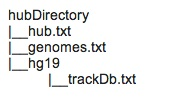

Hubs are a method of displaying remote custom tracks quickly (binary indexed bigBed, bigWig, BAM or VCF formats), while providing more persistence and flexibility than normal custom tracks for any UCSC assembly (or remotely-hosted assembly in twoBit format).
STEP 1: In a publicly-accessible directory, copy the hub.txt, genomes.txt, trackDb.txt files using the following command:
wget -r --no-parent --reject "index.html*" -nH --cut-dirs=3 http://genome.ucsc.edu/goldenPath/help/examples/hubDirectory/
Alternatively, if you do not have wget installed, use curl:
curl -O http://genome.ucsc.edu/goldenPath/help/examples/hubDirectory/hub.txt
curl -O http://genome.ucsc.edu/goldenPath/help/examples/hubDirectory/genomes.txt
mkdir hg19
cd hg19
curl -O http://genome.ucsc.edu/goldenPath/help/examples/hubDirectory/hg19/trackDb.txtIf you do not have curl, you can alternatively use a text editor and directly recreate the above three files.
Note: there is now a useOneFile on hub setting that allows the hub
properties to be specified in a single file. More information about this setting can be found on the
Genome Browser User Guide.
STEP 2: Paste your hub.txt link (http://yourURL/hub.txt) into the
Connected Hubs tab of the Track Data Hubs page,
then click the "Use Selected Hubs" button. It should work the same as pasting the original
hub.txt file:
http://genome.ucsc.edu/goldenPath/help/examples/hubDirectory/hub.txtSTEP 3: Congratulations! Your hub should display! If you are not already browsing the hg19 assembly on chr21, change assemblies and navigate to the gene SOD1 to see data displayed for each of the hub's BAM, bigWig, bigBed, and VCF tracks.
If you are having problems, be sure all your files and the hg19 directory are publicly-accessible. For hubs to work, your server must also accept byte-ranges. You can check using the following command to verify "Accept-Ranges: bytes" displays:
curl -I http://yourURL/hub.txtNow that you have a working hub copied from above, you can edit the three main text documents to get an idea of how they work, and also point to your local files.
Hubs begin with the short hub.txt, which describes your hub and informs the UCSC Browser where to find the underlying assemblies by defining the location of genomes.txt. The genomes.txt file outlines the hub's assemblies and defines the location of each assembly's trackDb.txt, which is basically the heart of your hub, defining the location of all the binary indexed track data for each assembly.
The hub.txt file can be as short as four lines, and the genomes.txt as short as two. The trackDb.txt file is typically much larger. At its most basic, it defines the tracks in the hub using stanzas about the type, location, and name of the binary files to display. However, it provides real power to tailor your presentation using additional trackDb settings.
Note that the Browser waits 5 minutes before checking for any changes to these files. When
editing hub.txt, genomes.txt,and trackDb.txt, you can shorten this delay by adding
udcTimeout=1 to your URL. For more information, see the
Debugging and Updating Track Hubs section of
the Track Hub User Guide.
For more detailed instructions on setting up a hub, refer to the Setting Up Your Own Track Hub section of the Track Hub User Guide.
hub MyHubsNameWithoutSpaces
shortLabel My Hub's Name
longLabel Name up to 80 characters versus shortLabel limited to 17 characters
genomesFile genomes.txt
email myEmail@address
descriptionUrl aboutMyHub.html
A hub starts with a few short lines in hubs.txt. The hub.txt file informs the UCSC Browser where to
find the underlying assemblies via the genomesFilegenomes.txt
parameter, which in turn will direct the Browser to each assembly's related binary indexed track
data outlined in the trackDb.txt. The optional descriptionUrl field
allows you to add an HTML page describing your hub. See an example of a basic hub.txt file
here.
genome assembly_database_1
trackDb assembly_1_path/trackDb.txt
genome assembly_database_2
trackDb assembly_2_path/trackDb.txt
The genomes.txt text file can be as short as a two-line stanza when using only one UCSC assembly
(e.g., genome panTro4 and trackDb
panTro4/trackDb.txt). The genome line directs the
Browser to use the panTro4 chimp genome, while the trackDb line points
the Browser to the associated trackDb.txt, which will outline all of the assembly's tracks.
View an example of a basic genomes.txt file here.
track uniqueNameNoSpacesOrDots
type track_type
bigDataUrl track_data_url
shortLabel label 17 chars
longLabel long label up to 80 chars
The trackDb.txt file uses stanzas for each track to inform the Browser of the name, type, location,
and description of each binary file to display. The trackDb settings allow further display control such as by adding the line
color255,0,0 to define a track's color. Each track
type
(bigBed,
bigWig, bam,
and vcfTabix)
has further customizable trackDb settings. The bigDataUrl can be a
relative path to a local file or a publicly-accessibly URL that accepts byte-ranges. The trackDb.txt
also allows for advanced track
grouping known as composites, superTracks and multiWigs. See a basic
example
trackDb.txt.
When type is set to bigBed, the track hub assumes that the bigBed track is BED3 by default.
To allow track hubs to use all fields in the bigBed file,
one must define how many columns to expect.
For example, if a bigBed file has nine columns, which would include an itemRgb field to display a
R,G,B color value (e.g. 255,0,0), specify the type as type bigBed 9.
If the file contains the first 9
standard BED columns, one could use type bigBed 9 + to denote the additional
non-standard columns as defined in AutoSql format(.as) file, -as=bedExample1.as.
Creating a trackDb.txt file for an assembly hub, you can control where the track appears underneath the Genome Browser image using the groups setting. The special groups setting in Assembly Hubs points to a separate text document that defines track groups under the main image (such as the first "Mapping and Sequencing" group found on almost all Browsers). The group setting is not inherited by the subtracks for a composite, supertrack, or multiwigs, so you will have to add the setting to each stanza in the container.